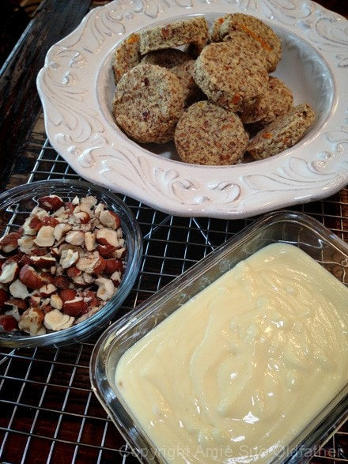
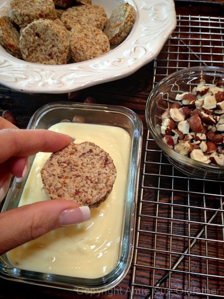
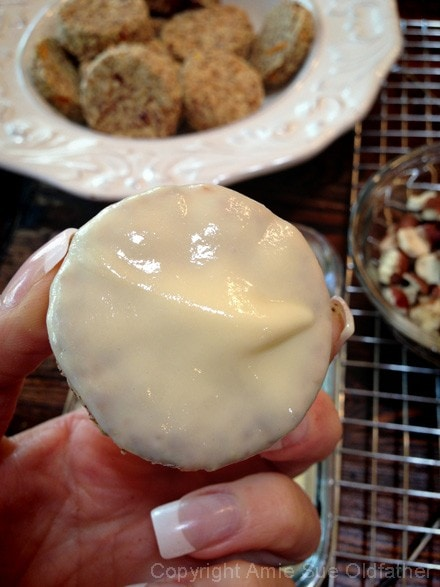
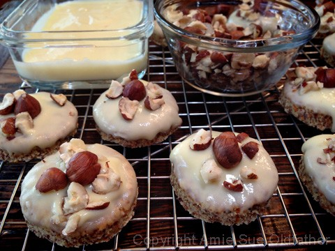
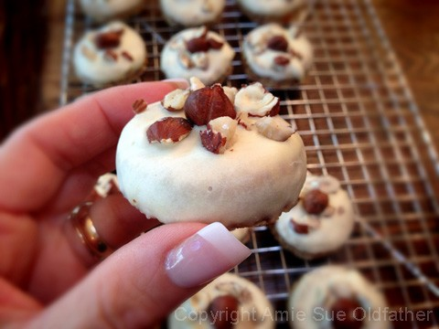

Cardamon Orange Hazelnut Biscuit with Orange Butter Glaze

~ raw, vegan, gluten-free ~
I need to start off with an apology… I forgot to count how many biscuits this recipe made. I am guilty. So sorry… I promise to do better in the future… have I groveled enough? Forgive me? :) I can tell you though that it makes a LOT! Not very helpful huh? I called these little treats, biscuits because they have that cookie biscuit texture. (updated the amount the recipe yields, thanks to a member who made the recipe).
I first made this recipe when we were in the midst of closing down our house in Arizona, a large portion of my kitchen equipment had already been packed. My intention was to pack up 90% of it in hopes that it would force me to slow down in the kitchen and focus on other things, like preparing for the move… but the passion burned too deep in me and I just could not stop… I am a raw force to be reckoned with, I have a spatula and I am not afraid to use it! lol
I intended to mold these into small biscuits and use my new fan-dangled biscuit cutters but guess what… I had packed all my cookie cutters. There in my pastry cabinet starred a single, lonely, white, 3 oz Dixie cup… PERFECT! lol
To be honest, I now prefer this over my round cookie cutter or biscuit cutter. I pressed the opening of the cup down into the batter and when I pulled it off, the biscuit was stuck inside. I then held it over the mesh sheet that came with my dehydrator and gave the cup a slight squeeze and the little biscuit popped right out! It just confirms, where there is a will, there is indeed a way!
The glaze that I made turned out simply scrumptious and I had to really practice self-control so that I wouldn’t sit down on the couch, turn on my favorite TV show and eat it straight from the bowl. After dipping the biscuits into the glaze, it will firm up once chilled. It is best to keep them stored in the fridge until you are ready to serve but the glaze won’t melt and ooze off when sitting at room temp. Please enjoy. :)
I used the almond pulp as the base to this recipe because I like the lighter texture that it gives the biscuit.
Ingredients:
Yields 42 x 2.5″ cookies
- 6 cups moist, packed almond pulp
- 1 cup ground flaxseed
- 1 cup raw hazelnuts, soaked
- 1/2 cup raw sunflower seeds, soaked
- 2 Tbsp orange zest
- 1 1/4 cups orange juice (4 oranges)
- 1/4 cup maple syrup
- 2 tsp ground cardamom
- 1/2 tsp ground Ceylon cinnamon
- 1/2 tsp Himalayan pink salt
Glaze for biscuits
Preparation:
Biscuit:
- In the food processor, fitted with the”S” blade, break down sunflower seeds and the hazelnuts.
- In a large bowl combine the almond pulp, ground flax, ground hazelnuts and sunflower seeds, orange zest, orange juice, maple syrup, cardamom, cinnamon, and salt. Mix well with hands to ensure everything gets mixed well. Tip: zest the oranges before juicing them.
- Spread the batter out onto a teflex sheet or cutting board. I made mine about 1/2″ thick. To cut out the biscuit shapes, I used a 3oz Dixie cup. Press the cup down into the dough and then squeeze to release it onto the mesh sheet that comes with the dehydrator.
- Dehydrate at 145 degrees (F) for 1 hour, then reduce to 115 degrees (F) for 6-8 hours. I took mine out while still moist, but you can decide on how dry or moist that you want it.
- Once cool, dip the top of the biscuit into the glaze, and sprinkle crushed hazelnuts on top.
- Store in an airtight container for 1 week in the fridge.
Glaze:
- In a food processor, fitted with the “S” blade, combine the softened coconut butter and orange juice. Process until silky and creamy.
- Turn the biscuit upside down and hold it on the edges. Dip the top of the biscuit down into the glaze and lift straight up.
- Place on a tray or plate and sprinkle the top with the crushed hazelnuts.
- Slip into the fridge to firm up the glaze.
- Eat and enjoy!
The Institute of Culinary Ingredients™
- To learn more about maple syrup by clicking (here).
- Why do I specify Ceylon cinnamon? Click (here) to learn why.
- What is Himalayan pink salt and does it really matter? Click (here) to read more about it.
- Is coconut butter the same as coconut oil? Click (here) to find out.
Culinary Explanations:
- Why do I start the dehydrator at 145 degrees (F)? Click (here) to learn the reason behind this.
- When working with fresh ingredients it is important to taste test as you build a recipe. Learn why (here).
- Don’t own a dehydrator? Learn how to use your oven (here). I do however truly believe that it is a worthwhile investment. Click (here) to learn what I use.





I accidentally dropped this one in the glaze… turned out pretty so here is another idea rather than just coating the tops. :)
© AmieSue.com